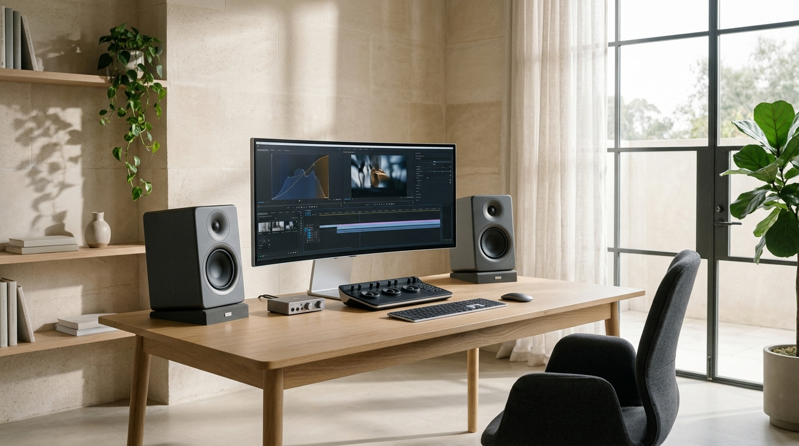

Edits designed to retain viewer attention.
I'm Yash Kumar — a video editor shaping short-form and long-form footage with Adobe Creative Cloud into clean cuts, purposeful motion graphics, and pacing that holds.

Core Passion
Motion Graphics
Primary Suite
Adobe Creative Cloud
The Screening Room
Filter by style, switch cuts on the reel, or open any project for the full editing breakdown.
Built for clients and creative teams.
Simple, dependable post-production.
Clear communication from raw footage drop to platform-ready export.
Brief & Footage
Lock in the hook, target platform, and pacing references so every cut serves your goal.
Story & Pacing Cut
Trim dead air and build clean rhythm in Premiere Pro tailored for short- or long-form retention.
Motion & Sound
Layer After Effects motion graphics, targeted b-roll, synced captions, and intentional sound design.
Review & Delivery
Turn around revisions quickly and export crisp masters ready for Instagram, YouTube, and ads.
Clean cuts and motion graphics that support the story.
I started editing about a year ago and taught myself motion graphics along the way — that's the part of the craft I care about most.
I edit across formats — short-form and long-form projects — adapting pacing and style to whatever the project calls for. My focus is clean cuts and graphics that support the story instead of getting in the way of it.
I'm open to freelance projects and full-time editing roles, ready to bring the same care to your project that went into every cut above.
Adobe Creative Cloud & Social Tools
Select any tool to see how it fits into my editing workflow.
Have a project? Let's cut it together.
Open to freelance short-form and long-form projects, as well as full-time or contract video editing roles.